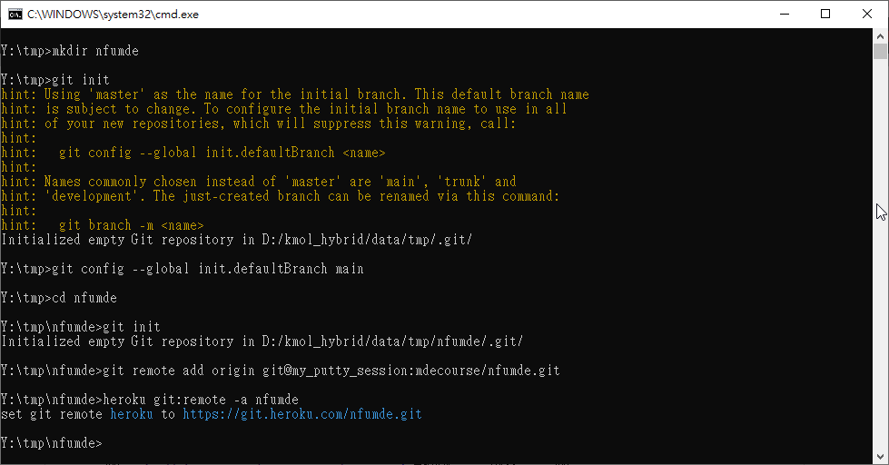

W8 <<
Previous Next >> RoboDK
期中專案
之前的 git 倉儲都是先在 Github 網際平台上建立後, 再設法 git clone 到近端改版, 但是這樣的前提是在 Github 建立倉儲時, 至少新增一個檔案 README.md, 但是假如在 Github 建立一個空倉儲則通常會建議使用者先在近端以 git init 產生一個空的 git 倉儲後, 納入改版資料然後再透過 git remote add 設定與遠端的 Github 倉儲 URL 進行對應.
而通常針對特定倉儲的 defualt 遠端 URL 連結的 git remote add 會以 origin 作為代號.
以下列 nfumde 近端的 .git/config 設定檔案為例:
[core]
repositoryformatversion = 0
filemode = false
bare = false
logallrefupdates = true
symlinks = false
ignorecase = true
[remote "origin"]
url = git@github.com:mdecourse/nfumde.git
fetch = +refs/heads/*:refs/remotes/origin/*
[remote "heroku"]
url = https://git.heroku.com/nfumde.git
fetch = +refs/heads/*:refs/remotes/heroku/*
[branch "main"]
remote = origin
merge = refs/heads/main
當使用者在命令列中的特定目錄中以 git init 建立 .git 目錄時, .git/config 中只會有以下資料, 表示此目錄為 git 空倉儲, 尚未與遠端 Github 有任何對應:
[core]
repositoryformatversion = 0
filemode = false
bare = false
logallrefupdates = true
symlinks = false
ignorecase = true
當使用者在該倉儲中, 執行 git remote add origin git@github.com:mdecourse/nfumde.git 後, .git/config 中將增加此一 git remote add 設定資料而成為:
[core]
repositoryformatversion = 0
filemode = false
bare = false
logallrefupdates = true
symlinks = false
ignorecase = true
[remote "origin"]
url = git@github.com:mdecourse/nfumde.git
fetch = +refs/heads/*:refs/remotes/origin/*
當使用者在執行 git push --set-upstream origin main 或 git push -u origin main 時, 由於附加設定內建的 upstream 為 main 分支, 因此之後的 git push 與 git pull 若從 orgin 存取版本資料, 可以不用宣告分支, git 會假定存取 main 分支, 意即 git push 就是指 git push origin main. 此時.git/config 中將增加以下 upstream 設定:
[branch "main"]
remote = origin
merge = refs/heads/main
最後若再執行 heroku login -i 以及 heroku git:remote -a nfumde, 也就是針對 Heroku 中的 nfumde app 設定 git remote add, 則最後的 .git/config 將成為:
[core]
repositoryformatversion = 0
filemode = false
bare = false
logallrefupdates = true
symlinks = false
ignorecase = true
[remote "origin"]
url = git@github.com:mdecourse/nfumde.git
fetch = +refs/heads/*:refs/remotes/origin/*
[remote "heroku"]
url = https://git.heroku.com/nfumde.git
fetch = +refs/heads/*:refs/remotes/heroku/*
[branch "main"]
remote = origin
merge = refs/heads/main
現在假如連倉儲的 origin url 都選擇自行設定, 其步驟如下:
- 在近端命令視窗中, 以 git init (為了配合使用 main 作為主分支名稱, 可以使用 git config --global init.defaultBranch main 將設定寫入 home_ipv6\.gitconfig 中) 建立空的倉儲, 取得 Github 空倉儲的 url 後, 可以採用 https 或 SSH 模式進行 git remote add 的設定.
- 假如遠端的 Github 倉儲使用者帳號為 mdecourse, 而空倉儲名稱為 nfumde, 則其 https 的 url 為 https://github.com/mdecourse/nfumde, 若採用 SSH 則其 url 為 git@my_putty_session:mdecourse/nfumde.git
- 步驟 2. 的指令為 git remote add origin https://github.com/mdecourse/nfumde.git, 或者使用 git remote add origin git@my_putty_session:mdecourse/nfumde.git
- 另外若將此一倉儲在近端使用 Heroku 的指令與遠端的 Heroku 名稱為 nfumde 的 app 進行對應設定, 則命令在 heroku login -i 之後, 以 heroku git:remote -a nfumde, 之後就可以透過 git push heroku 將此一倉儲的版本推向 Heroku.
操作過程, 第一時間在近端以 git init 建立空倉儲時發現仍使用 master 作為主分支名稱, 因此利用 git config --global init.defaultBranch main 將設定存入 home_ipv6\.gitconfig 中, 將主分支名稱設為 main. 畫面如下:

以上所完成的 Heroku 網際程式: http://nfumde.herokuapp.com/table
假如要將上列網際程式改為 AJAX 模式, 可以參考下列程式碼, 以 button 的方式送出 AJAX 所需的 POST 變數:
from flask import (Flask, request, jsonify)
app = Flask(__name__)
html_page = """<!DOCTYPE HTML>
<html>
<head>
<title>Rough AJAX Test</title>
<script>
function loadXMLDoc()
{
var req = new XMLHttpRequest()
req.onreadystatechange = function()
{
if (req.readyState == 4)
{
if (req.status != 200)
{
//error handling code here
}
else
{
var response = JSON.parse(req.responseText)
document.getElementById('myDiv').innerHTML = response.username
}
}
}
req.open('POST', '/ajax')
req.setRequestHeader("Content-type", "application/x-www-form-urlencoded")
var un = document.getElementById('scname').value
var sec = document.getElementById('secret').value
var postVars = 'username='+un+'&secret='+sec
req.send(postVars)
return false
}
</script>
</head>
<body>
<h1>Flask AJAX Test</h1>
<form action="" method="POST">
<input type="text" name="scname" id="scname">
<input type="hidden" name="secret" id="secret" value="shhh">
<input type="button" value="Submit" onclick="return loadXMLDoc()">
</form>
<div id="myDiv"></div>
</body>
</html>"""
@app.route('/')
def index():
return html_page
@app.route('/ajax', methods = ['POST'])
def ajax_request():
username = request.form['username']
return jsonify(username=username)
if __name__ == "__main__":
app.run(debug = True)
以上的 html 原始碼可以利用 https://html-online.com/editor/ 進行編輯.
W8 <<
Previous Next >> RoboDK